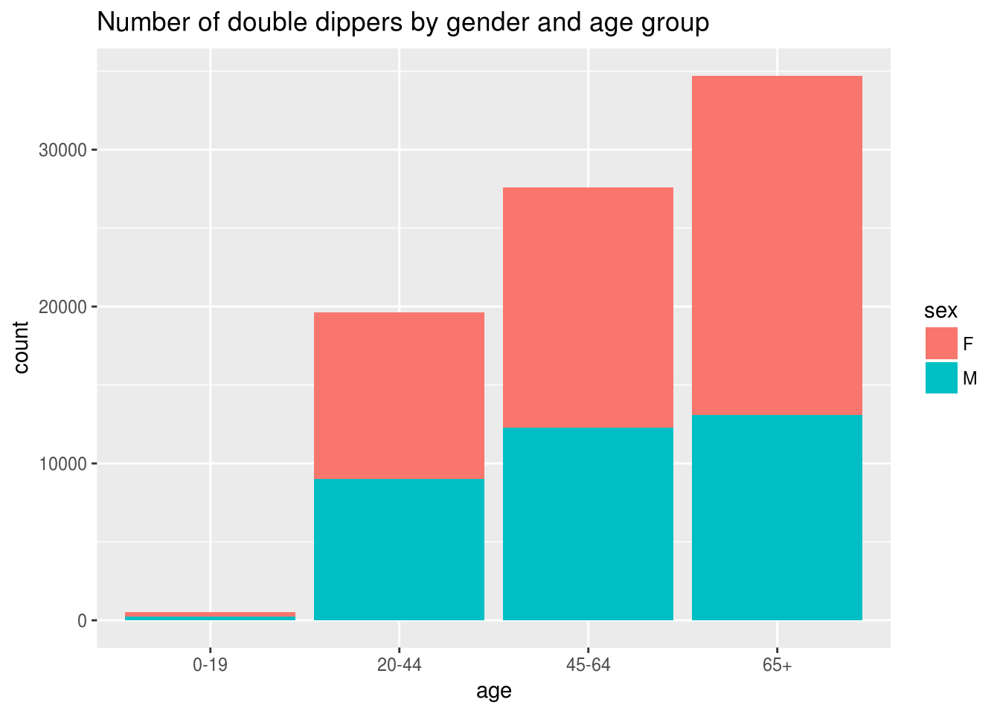
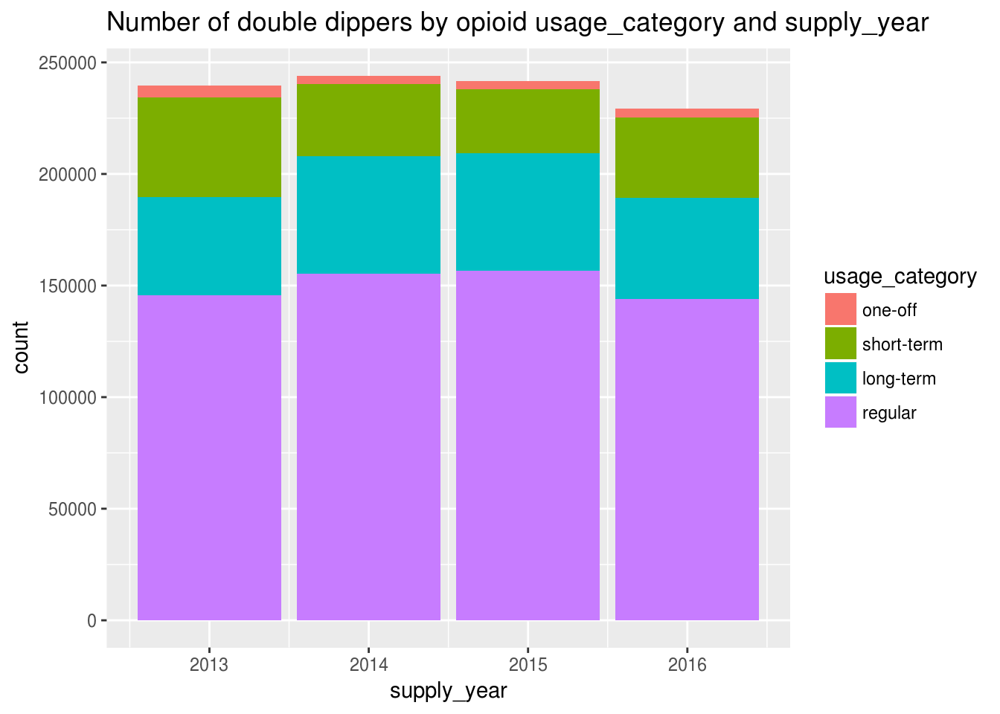

Barbituate 1
Mofi Islam and Dennis Wollersheim
2018-04-30
Last updated: 2018-07-23
workflowr checks: (Click a bullet for more information)-
✖ R Markdown file: uncommitted changes
The R Markdown file has unstaged changes. To know which version of the R Markdown file created these results, you’ll want to first commit it to the Git repo. If you’re still working on the analysis, you can ignore this warning. When you’re finished, you can runwflow_publishto commit the R Markdown file and build the HTML. -
✔ Environment: empty
Great job! The global environment was empty. Objects defined in the global environment can affect the analysis in your R Markdown file in unknown ways. For reproduciblity it’s best to always run the code in an empty environment.
-
✔ Seed:
set.seed(20180719)The command
set.seed(20180719)was run prior to running the code in the R Markdown file. Setting a seed ensures that any results that rely on randomness, e.g. subsampling or permutations, are reproducible. -
✔ Session information: recorded
Great job! Recording the operating system, R version, and package versions is critical for reproducibility.
-
Great! You are using Git for version control. Tracking code development and connecting the code version to the results is critical for reproducibility. The version displayed above was the version of the Git repository at the time these results were generated.✔ Repository version: 6a64a30
Note that you need to be careful to ensure that all relevant files for the analysis have been committed to Git prior to generating the results (you can usewflow_publishorwflow_git_commit). workflowr only checks the R Markdown file, but you know if there are other scripts or data files that it depends on. Below is the status of the Git repository when the results were generated:
Note that any generated files, e.g. HTML, png, CSS, etc., are not included in this status report because it is ok for generated content to have uncommitted changes.Ignored files: Ignored: data/cache/ Untracked files: Untracked: data/df_intersect_rr.rdata Unstaged changes: Modified: analysis/analysis.Rmd Modified: lib/functions.R Modified: lib/generate_data_frames.R
Expand here to see past versions:
rm(list=ls())
options(width = 200)
show_code = FALSE
source("lib/functions.R")
source("lib/get_data.R")
source("lib/generate_data_frames.R")
library('tidyverse')
#dataset="_rr"
dataset=""
get_data_from_cache(df_suffix = dataset)
intersect_filename = paste0( 'data/df_intersect', dataset, '.rdata')
df %<>% mutate( row=row_number())
df %>%
filter( is_benzo( type_code ) ) %>%
{ . } -> df_benzo
df %>%
filter( !is_benzo( type_code ) ) %>%
{ . } -> df_opioid
df_patient_opioid = df_patient %>% filter( pin %in% df_opioid$pin)
df_patient_benzo = df_patient %>% filter( pin %in% df_benzo$pin)Dataset summary
Total Number of Scripts with either Benzo or Opioid
A tibble: 8 x 2
Groups: state [8]
state n
Total Number of People with either Benzo or Opioid
A tibble: 8 x 2
Groups: state [8]
state n
Total Number of People with Opioid
[1] “people” # A tibble: 8 x 2 # Groups: state [8] state n
Methods - find overlaps
Condervative Assumptions
- 7 day window at start and end of opioid presciption
- 2 doses / day
if (file.exists( intersect_filename )) {
load( intersect_filename, verbose=TRUE )
} else {
#
df %>%
filter( is_benzo( type_code ) ) %>%
group_by(pin) %>%
mutate( end_date = supply_date + floor(quantity/2)) %>%
select( pin, item_code, quantity, n_dose, supply_date, end_date, row) %>%
nest( item_code, supply_date, end_date, quantity, n_dose, row, .key=benzo ) %>%
{ . } -> df_benzo_nested
#
df %>%
filter( !is_benzo( type_code ) ) %>%
group_by(pin) %>%
mutate( end_date = supply_date + floor(quantity/2)) %>%
select( pin, item_code, quantity, n_dose, supply_date, end_date, row) %>%
nest( item_code, supply_date, end_date, quantity, n_dose, row, .key=opioids ) %>%
{ . } -> df_opioid_nested
#
library('IRanges')
#
#
# df_benzo_nested %>%
# inner_join( df_opioid_nested ) %>%
# rowwise() %>%
# do( joined = interval_inner_join( .$opioids, .$benzo, by=qw('supply_date end_date') )) %>%
# ungroup() %>%
# cbind( df_both ) %>%
# as.tibble() %>%
# select(pin, joined ) %>%
# unnest() %>%
# { . } -> df_intersect
#
#
cluster <- create_cluster(4)
df_benzo_nested %>%
inner_join( df_opioid_nested ) %>%
partition(pin, cluster=cluster ) %>%
{ . } -> df_both
#
cluster_library(df_both, c("tidyverse", "IRanges", "fuzzyjoin"))
#
df_both %>%
do( joined = interval_inner_join( data.frame(.$opioids),
data.frame(.$benzo),
by=c('supply_date','end_date') )) %>%
collect() %>%
ungroup() %>%
unnest() %>%
mutate( supply_year = year( supply_date.x)) %>%
{ . } -> df_intersect
#
save(df_intersect, file=intersect_filename)
}Initialising 4 core cluster.Joining, by = "pin"#cl <- makeCluster("thealfred.duckdns.org", user="dewoller", master="131.172.55.229", homogeneous=FALSE)What do the group of double dippers look like
We need to have some measure of dd intensity, we could use: * compare them with the single dippers, e.g. as percentage of single opioid users * on their own, e.g by DDD, or by # of days of overlap
Questions
- how to normalise data;
- further research questions; what about users that overlap with their own opioid prescriptions
df_intersect %>%
distinct(pin) %>%
inner_join(df_patient) %>%
ggplot(aes(age, fill=sex)) + geom_bar() +
ggtitle( "Number of double dippers by gender and age group")Joining, by = "pin"
Expand here to see past versions of explore_overlap-1.png:
| Version | Author | Date |
|---|---|---|
| 0c83d40 | Dennis Wollersheim | 2018-07-20 |
df_intersect %>%
distinct(pin) %>%
inner_join(df_patient_usage) %>%
inner_join(df_patient) %>%
ggplot(aes(age, fill=usage_category)) + geom_bar() +
ggtitle( "Number of double dippers by opioid usage_category and age group")Joining, by = "pin"
Joining, by = "pin"
Expand here to see past versions of explore_overlap-2.png:
| Version | Author | Date |
|---|---|---|
| 0c83d40 | Dennis Wollersheim | 2018-07-20 |
df_intersect %>%
inner_join(df_patient_usage %>% filter( drug_type=='opioid')) %>%
inner_join(df_patient) %>%
ggplot(aes(supply_year, fill=usage_category)) + geom_bar() +
ggtitle( "Number of double dippers by opioid usage_category and supply_year")Joining, by = "pin"
Joining, by = "pin"
Expand here to see past versions of explore_overlap-3.png:
| Version | Author | Date |
|---|---|---|
| 0c83d40 | Dennis Wollersheim | 2018-07-20 |
df%>%
ggplot(aes(supply_year, fill=drug_type)) +
geom_bar() +
ggtitle( "Number of benzo and/or opioid scripts by supply_year")
Expand here to see past versions of explore_overlap-4.png:
| Version | Author | Date |
|---|---|---|
| 0c83d40 | Dennis Wollersheim | 2018-07-20 |
what type of users do we have
number of users of each type, overall
df %>% group_by( usage_type, type_name) %>% summarise( quantity=sum(quantity) ) %>% ggplot( aes( usage_type, quantity, fill=type_name)) + geom_col()+ ggtitle( “Total number of pills per usage and drug type”)

Prescriptions that participate in double dipping
df %<>% mutate( usage_type = as.factor(
ifelse( row %in% df_intersect$row.x,
'opioid_dd',
ifelse( row %in% df_intersect$row.y,
'benzo_dd',
paste( drug_type, 'alone') ))))
df %>%
group_by( usage_type, type_name) %>%
summarise( quantity=sum(quantity) ) %>%
ggplot( aes( usage_type, quantity, fill=type_name)) +
geom_col()+
ggtitle( "Total number of pills per usage and drug type")
df %>%
group_by( usage_type, supply_year) %>%
summarise( quantity=sum(quantity) ) %>%
ggplot( aes( supply_year, quantity, color=usage_type, group=usage_type)) +
geom_line()+
ggtitle( "Total number of pills per usage and year")
Session information
sessionInfo()R version 3.4.4 (2018-03-15)
Platform: x86_64-pc-linux-gnu (64-bit)
Running under: Ubuntu 17.10
Matrix products: default
BLAS: /usr/lib/x86_64-linux-gnu/openblas/libblas.so.3
LAPACK: /usr/lib/x86_64-linux-gnu/libopenblasp-r0.2.20.so
locale:
[1] LC_CTYPE=en_AU.UTF-8 LC_NUMERIC=C LC_TIME=en_AU.UTF-8 LC_COLLATE=en_AU.UTF-8 LC_MONETARY=en_AU.UTF-8 LC_MESSAGES=en_AU.UTF-8 LC_PAPER=en_AU.UTF-8
[8] LC_NAME=C LC_ADDRESS=C LC_TELEPHONE=C LC_MEASUREMENT=en_AU.UTF-8 LC_IDENTIFICATION=C
attached base packages:
[1] stats4 parallel stats graphics grDevices utils datasets methods base
other attached packages:
[1] bindrcpp_0.2.2 keyring_1.1.0 RPostgreSQL_0.6-2 DBI_1.0.0 forcats_0.3.0 dplyr_0.7.6 purrr_0.2.5 readr_1.1.1
[9] tidyr_0.8.1 tibble_1.4.2 ggplot2_3.0.0 tidyverse_1.2.1 multidplyr_0.0.0.9000 IRanges_2.12.0 S4Vectors_0.16.0 BiocGenerics_0.24.0
[17] fuzzyjoin_0.1.4 DataCache_0.9 wrapr_1.5.1 readstata13_0.9.2 lubridate_1.7.4 knitr_1.20 stringr_1.3.1 magrittr_1.5
[25] workflowr_1.1.1 nvimcom_0.9-72
loaded via a namespace (and not attached):
[1] Rcpp_0.12.17 lattice_0.20-35 utf8_1.1.4 assertthat_0.2.0 rprojroot_1.3-2 digest_0.6.15 R6_2.2.2 cellranger_1.1.0 plyr_1.8.4 backports_1.1.2
[11] evaluate_0.10.1 httr_1.3.1 pillar_1.3.0 rlang_0.2.1 lazyeval_0.2.1 readxl_1.1.0 rstudioapi_0.7 whisker_0.3-2 R.utils_2.6.0 R.oo_1.22.0
[21] rmarkdown_1.10 labeling_0.3 munsell_0.5.0 broom_0.5.0 compiler_3.4.4 modelr_0.1.2 pkgconfig_2.0.1 htmltools_0.3.6 tidyselect_0.2.4 viridisLite_0.3.0
[31] fansi_0.2.3 crayon_1.3.4 withr_2.1.2 R.methodsS3_1.7.1 grid_3.4.4 nlme_3.1-137 jsonlite_1.5 gtable_0.2.0 git2r_0.23.0 scales_0.5.0
[41] cli_1.0.0 stringi_1.2.3 xml2_1.2.0 tools_3.4.4 glue_1.3.0 hms_0.4.2 yaml_2.1.19 colorspace_1.3-2 rvest_0.3.2 bindr_0.1.1
[51] haven_1.1.2 This reproducible R Markdown analysis was created with workflowr 1.1.1